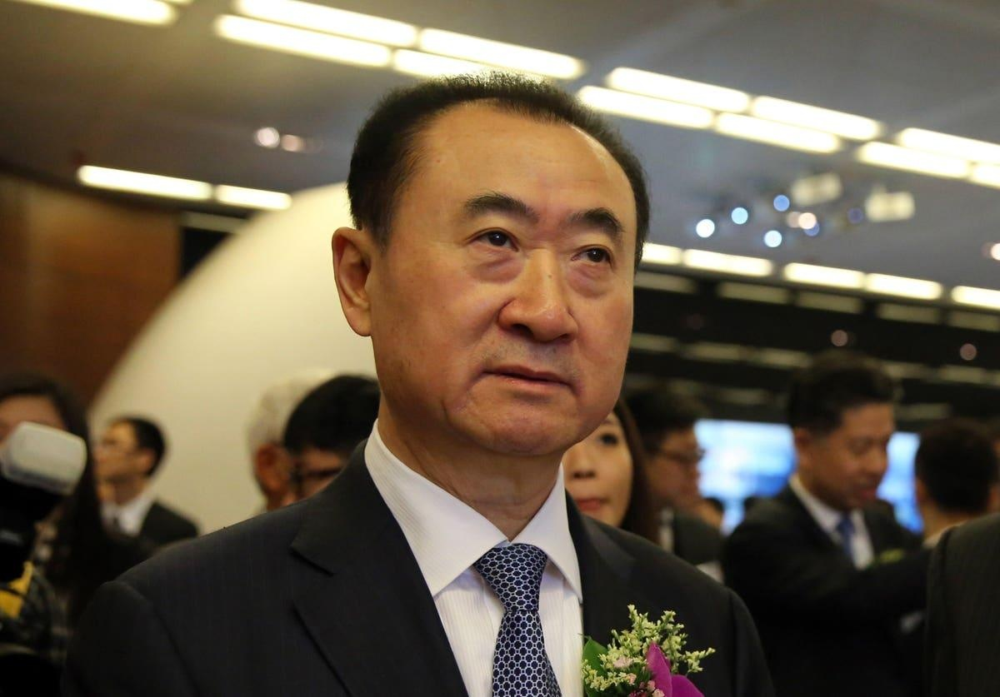

Embattled Chinese Billionaire Wang Jianlin Scrambles To Avoid Default With Asset SaleChinese billionaire Wang Jianlin, who was once Asia’s richest man, is trying to avoid default on a bond payment with asset sales, and a recent agreement to sell a $315 million stake in an entertainment and film unit may offer investors temporary reprieve after his company’s weakening cash position rocked China’s high-yield market. Wang’s Dalian Wanda Group is selling a 49% stake in Beijing Investment to Hong Kong-listed gaming and film company China Ruyi for 2.26 billion yuan ($315 million), according to a stock exchange filing late Sunday. Beijing Investment is a shareholder of the Shenzhen-listed Wanda Film. The former has been selling its stake in Wanda Film over the past few months, though it still holds a significant stake in the movie production and theater operator. Proceeds from the latest sale, which will see Ruyi become an indirect shareholder of Wanda Film, are going to fund the payment of a $400 million bond that matured on Sunday, according to the state-run The Paper, citing an anonymous source with knowledge of the matter. Just last week, a Wanda unit has been downgraded by major rating agencies further into junk territory over uncertainties about whether it can pay the dollar bond. The company has a grace period of 10 days before the event of a default can be triggered. But the property management unit, Dalian Wanda Commercial Management (DWCM), only has about $200 million in offshore cash it can access, according to a July 20 research note from S&P Global Ratings. As one of the few remaining real estate-related firms that have managed to avoid defaults amid China’s property crisis, its depleting coffers have sent tremors across Asian high-yield bond markets, spooking investors already disappointed by the lack of major policy support from Beijing. A Wanda representative didn’t respond to an email request seeking comment. Although Wang, who has seen his wealth plunge almost 80% from its peak of $33 billion in 2016, may have managed to avert default this time, his entertainment-to-property conglomerate still faces mounting debt repayment pressure over the next year or so. Aside from almost $2 billion in maturing bonds due over the next 12 months, DWCM also needs to address the repeatedly delayed initial public offering of its Zhuhai Wanda subsidiary. The unit may need to repay investors, which include Ant Group, Citic Capital and billionaire Yang Huiyan’s property developer Country Garden, $4.2 billion if Zhuhai Wanda fails to go public by end of this year. Last month, Zhuhai Wanda has refiled for the fourth time its prospectus for a potential Hong Kong listing, but analysts have said the IPO prospect looks increasingly dim. This is because Beijing is determined to wean the economy off its dependence on the real estate sector, in part by directing funding away from conglomerates such as Wang’s to high-tech industries like semiconductors and advanced manufacturing, so that they could eventually be nurtured into new pillars of growth. Wanda’s access to financing, as a result, has been weakened. It is “highly uncertain” whether the company can use its cash on hand and redeem about $7.5 billion worth of short-term wealth management products to pay off debt, according to a Moody’s research note that is also published on July 20. “The downgrade reflects our concern over DWCM's liquidity position because of its weak financial and liquidity management, as well as its weaker-than-expected financial flexibility in deploying its internal sources," Moody's analyst Alfred Hui wrote in the note. “The company’s ability to mobilize its cash and liquid investments could have been jeopardized due to risk aversion from its banks and other financiers.” |
 |